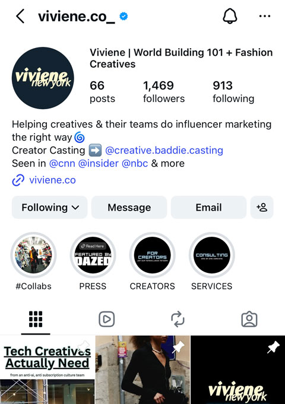
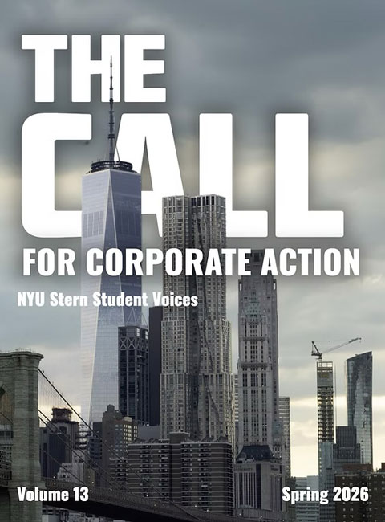
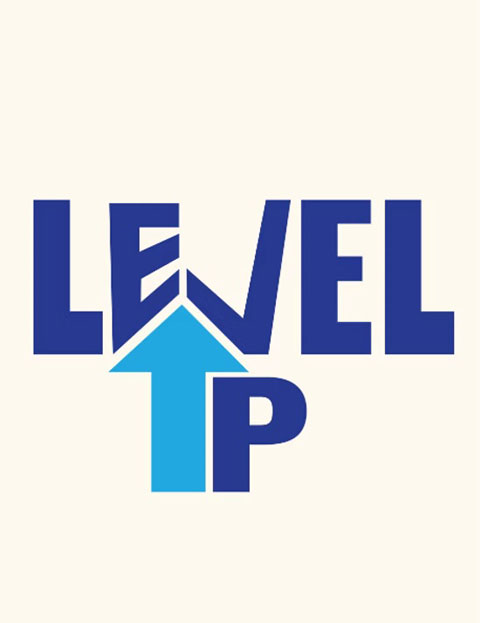
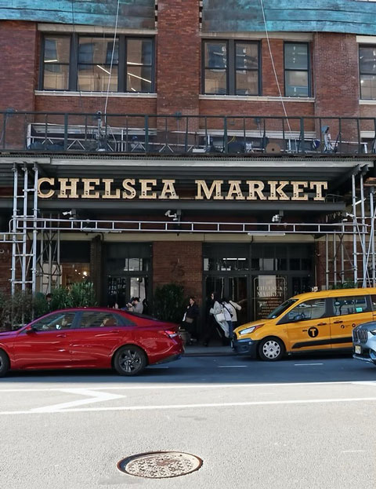
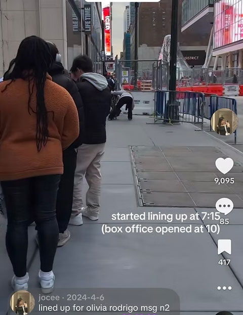

Choose background color:
Projects

Internship at Viviene New York
When I was a Social Media Marketing intern at Viviene New York, a talent management and creative agency, my main role involved engaging content on Instagram and TikTokto increase its media presence. The content reached more than 15,000 accounts and gained more than 100k views. I learned to utilize reels and posts to attract engagement and understand the types of content that were more effective. I also performed market research to determine popular trends on the internet and current events in pop culture.

The Call for Coporate Action
The Call for Corporate Action is an annual publication that includes ten articles written by students of NYU Stern. As the lead designer, I am responsible for the visual representation, incorporating my photography as well as layout design.

LevelUP: Scroll, Learn, Create
LevelUp is a project that my teammate and I came up with for the Social Media Practicum course. We drafted an app that would combat some of the negative impacts of social media. The act of scrolling was the catalyst of our project. We wanted to turn scrolling into something educational. LevelUp allowed users to learn new knowledge in a more interactive way. From the initial discussion on the topic to the final presentation, we made several revisions, and this presentation illustrates our ideas.

Ethnography Project on Chelsea Market
A project for the Methods in Media Studies course that ledsme to a better understanding of the community at Chelsea Market and how it has changed over time. With photos, videos, and interviews, this website illustrates a clear representation of my observations.

TikTok Reaching More Than 100K Views
As a big fan of Olivia Rodrigo, I posted a TikTok showing my journey lining up for tickets at Madison Square Garden on the morning of the concert. I included the time stamps and what I did during those times, and edited everything with CapCut. A less than a minute video reached more than 100K views on the platform.
112 年鴻寶寶團團轉: 海陸空驚奇大探險
As the sole person on this project, I took photos and designed a 3-day summer camp for elementary school children. From the initial planning stage to the last day of the camp, I captured every moment for participants to remember the unforgettable time they had.